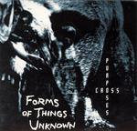

Home Artist links Label link

Forms Of Things Unknown - Cross Purposes
| Artist: | Forms Of Things Unknown |
| Title: | Cross Purposes |
| Label: | Panaxis Records PNXS 001 |
| Length(s): | 32 minutes |
| Year(s) of release: | 2003 |
| Month of review: | [03/2004] |
Line up
Ferrara Brain Pan - bass clarinet, saxes, flutes, recorders, yidaki, psaltery, kang lings, tibetan bowls & tingshas, samples & fx processing
Shannon Wolfe - soprano on 4
Bob Ayres - baritone on 5
Tracks
Black Candles & Pentegrams 'n shit
| 1) | I - Risen, The Judas Moon | 6.47
|
| 2) | Ii - Errant Bodies | 9.13
|
Miriam Matrem
| 3) | A - Instrumental | 2.50
|
| 4) | B - Vocal | 2.49
|
| 5) | Stupid Blood | 7.30
|
Summary
The music
Opener Black Candles & Pentagrams 'n Shit is a more atmospheric than purely melodic piece. Most dominant are a somewhat grating and at times somewhat abrasive tapeloop overlaid with more melodic sounding bass clarinet. This is pretty minimalist.
Mariam Matrem is medieval sounding piece: the melody is played with flute with chanting vocals, undoubtedly in latin. The piece, apparently, is from the 14th century. Both an instrumental and a vocal version of the piece are featured.
Stupid Blood is a Devoto/Jones cover, played with an almost rhythmically applied harmonium like keypiece, later augmented with bagpipes (or what sounds like those), bass clarinet and flute. Ayres vocals are fitting for the atmosphere, somewhat opera-like, but not so heavy sounding.
Conclusion
Mind you, this is not progressive music in its regular form. In fact, I wouldn't even call it avant prog: this is avant garde. The combination of experiment, atmosphere and melody works into a result that is as balanced as it it diverse. Not exactly accessible, and probably considered too abrasive at some times by some, this is a very strong experimental album.
© Roberto Lambooy